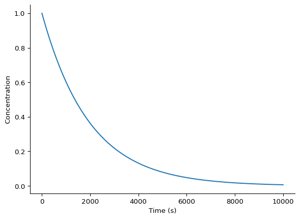
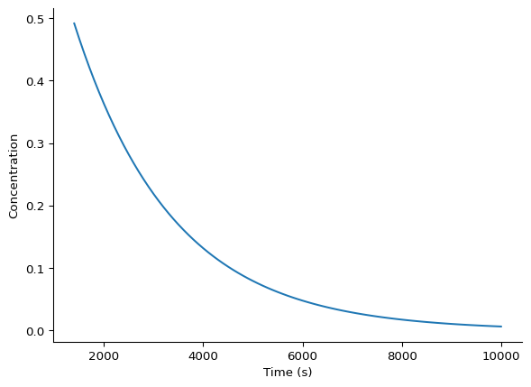

data_filename = "data/FIRST ORDER_k=0.0005.txt"Plotting data from file
How can we use what we have learnt in the past few workshops to read data from a file? And how can we plot this?
One way to then plot this data would be to extract the index and/or multiple columns we are interested in plotting and use matplotlib as we have done before.
As an example, we’ll look at a new data file. This contains a simulation of the (fractional) concentration change for two species in a reaction, “A” and “B” where \(A \rightarrow B\).
If we open this file more directly in Python when we looked at a text file) we can take quick look at the contents to see what this looks like:
open_file = open(data_filename)
data_from_file = open_file.read()
print(data_from_file[0:200])Time A B
0 1 0
100 0.950565 0.0494353
200 0.903573 0.0964268
300 0.858905 0.141095
400 0.816445 0.183555
500 0.776083 0.223917
600 0.737717 0.262283
700 0.701248 0.298752
800 0.666582 0.33341From printing out the first 200 characters, we can see this looks like a table of data with each column separated by spaces. This looks nicely formatted with a title row including the column names and no extra header rows.
We will see in the next year that there are dedicate packages to manipulate large tabulated files. However, for now we can exploit numpy as a quick and effective way to read such input.
import numpy as np
data_kinetic_k0005 = np.genfromtxt("data/FIRST ORDER_k=0.0005.txt", names=True)This is a special kind of array called a structured array, because it has named fields. You can check this by querying the subproperties of the array:
data_kinetic_k0005.dtype.names('Time', 'A', 'B')These various names are the fields of the array, corresponding to the columns in the file. This syntax is reminiscent of what we have seen in the case of dictionaries, where keys are used to specific other objects stored in the dictionary.
data_kinetic_k0005['A']array([1. , 0.950565 , 0.903573 , 0.858905 , 0.816445 ,
0.776083 , 0.737717 , 0.701248 , 0.666582 , 0.633629 ,
0.602305 , 0.57253 , 0.544227 , 0.517323 , 0.491749 ,
0.467439 , 0.444331 , 0.422365 , 0.401486 , 0.381638 ,
0.362772 , 0.344838 , 0.327791 , 0.311586 , 0.296183 ,
0.281541 , 0.267623 , 0.254393 , 0.241817 , 0.229863 ,
0.218499 , 0.207698 , 0.19743 , 0.18767 , 0.178393 ,
0.169574 , 0.161191 , 0.153222 , 0.145648 , 0.138447 ,
0.131603 , 0.125097 , 0.118913 , 0.113035 , 0.107447 ,
0.102135 , 0.097086 , 0.0922865 , 0.0877243 , 0.0833876 ,
0.0792653 , 0.0753468 , 0.071622 , 0.0680813 , 0.0647157 ,
0.0615165 , 0.0584754 , 0.0555846 , 0.0528368 , 0.0502248 ,
0.0477419 , 0.0453818 , 0.0431383 , 0.0410057 , 0.0389786 ,
0.0370517 , 0.03522 , 0.0334789 , 0.0318239 , 0.0302506 ,
0.0287552 , 0.0273337 , 0.0259824 , 0.024698 , 0.023477 ,
0.0223164 , 0.0212132 , 0.0201645 , 0.0191677 , 0.0182201 ,
0.0173194 , 0.0164632 , 0.0156493 , 0.0148757 , 0.0141403 ,
0.0134413 , 0.0127768 , 0.0121452 , 0.0115448 , 0.0109741 ,
0.0104316 , 0.00991587, 0.00942568, 0.00895972, 0.00851679,
0.00809576, 0.00769554, 0.00731511, 0.00695349, 0.00660974,
0.00628298])This data also has a column for “Time” as the number of seconds elapsed.
data_kinetic_k0005 ['Time']array([ 0., 100., 200., 300., 400., 500., 600., 700.,
800., 900., 1000., 1100., 1200., 1300., 1400., 1500.,
1600., 1700., 1800., 1900., 2000., 2100., 2200., 2300.,
2400., 2500., 2600., 2700., 2800., 2900., 3000., 3100.,
3200., 3300., 3400., 3500., 3600., 3700., 3800., 3900.,
4000., 4100., 4200., 4300., 4400., 4500., 4600., 4700.,
4800., 4900., 5000., 5100., 5200., 5300., 5400., 5500.,
5600., 5700., 5800., 5900., 6000., 6100., 6200., 6300.,
6400., 6500., 6600., 6700., 6800., 6900., 7000., 7100.,
7200., 7300., 7400., 7500., 7600., 7700., 7800., 7900.,
8000., 8100., 8200., 8300., 8400., 8500., 8600., 8700.,
8800., 8900., 9000., 9100., 9200., 9300., 9400., 9500.,
9600., 9700., 9800., 9900., 10000.])To create a plot for time vs concentration of A, we can extract this data from our array
# Extract time and concentration of A from our array
time = data_kinetic_k0005['Time']
concentration_A = data_kinetic_k0005["A"]We could then use matplotlib to plot this:
import matplotlib.pyplot as plt
# Create our Figure and Axes objects for plotting
fig, ax = plt.subplots()
# Plot our data - time vs concentration of A
ax.plot(time, concentration_A)
# Add x and y labels for this data
ax.set_xlabel("Time (s)")
ax.set_ylabel("Concentration")Text(0, 0.5, 'Concentration')
This simulation shows a clean relationship as concentration decreases over time (in an exponential way).
Suppose we want to filter our data and plot only concentrations less than 0.5. We can simply create a boolean array that masks the invalid data.
mask = concentration_A <= 0.5
concentration_A_low = concentration_A[mask]
# Make sure to match the time values (index) to our filtered data
time_low = time[mask]Here we have filtered our data to include all fractional concentrations less than (or equal to) 0.5. Notice we have also matched our time values to plot to these concentrations by extracting the index from our new array concentration_A_low.
# Create our Figure and Axes objects for plotting
fig, ax = plt.subplots()
# Plot our data - time vs concentration of A
ax.plot(time_low, concentration_A_low)
# Note: Alternative syntax! we can set multiple properties at once
ax.set(xlabel = "Time (s)", ylabel="Concentration")
You can also see the slope is similiar (in fact it is the same) between our unfiltered and filtered data (this is due to the exponential relationship).
Exercise
- Re-plot the un-filtered graph created above and add another line to show concentration of B vs time from the
data_kinetic_k0005array on the same plot.
- Can you include a label for A and B?
Calculate the the sum of the concentrations for these two columns (A and B).
Re-plot the graph created in the previous question and add this sum as a third line.
- Consider: What does this sum tell us about “A” is decaying into “B”?